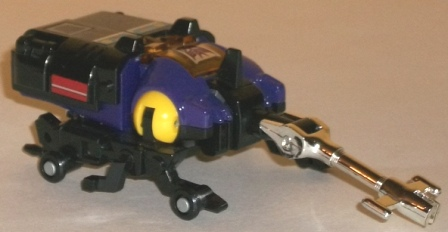
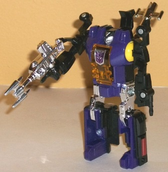
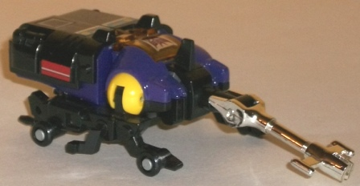
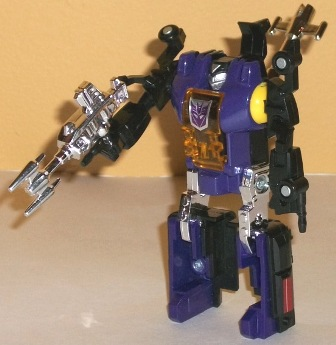
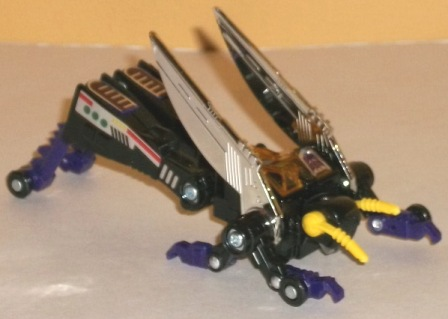
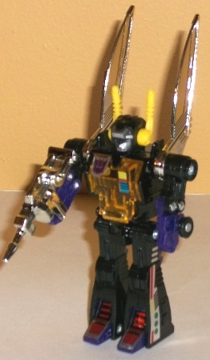
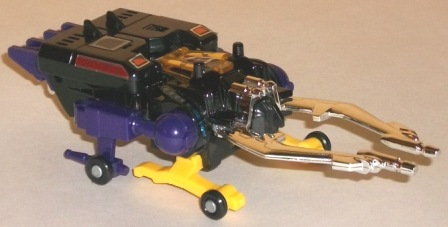
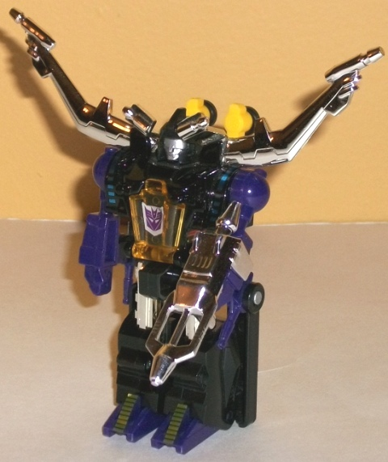

 
Difficulty of Transformation : Very Easy
Color Scheme : Black, chrome silver, dark purple, and some dull yellow, silver, and transparent amber
Individual Rating : 7.1
Allegiances:
Decepticon
Price
: $30 (U.S.)
Difficulty of Sticker Applications
:
Hard
Overall Rating
: 6.7
 Hardshell
Hardshell


Difficulty of Transformation
: Very
Easy
Color Scheme
: Black, chrome silver,
dark purple, and some dull yellow, silver, and transparent amber
Individual Rating
: 7.1
"Hardshell" is a copyright
cover for Bombshell, what this character's
really
called. Anyways,
the Insecticon's alt modes are a bit abstract-- this is supposed to be
a robotic rhinoceros beetle, in case you were wondering. I really like
the chrome antenna and how much the yellow shoulder joints look like "eyes",
but otherwise it's a bit too teched-up for me. Not enough beast and too
much vehicle, y'know what I mean? Still, taking that into account, it's
a pretty decent mode-- the arms are blatantly obvious on the insect "legs"
on the bottom (which actually have two wheels on each arm to help Bombshell
roll better), but otherwise he's robot extra-free. He's got a decent amount
of tech detail, and the color scheme of black, purple, and a bit of amber/yellow
and silver as accents is both Decepticon-y and a bit eye-catching, so I
like it. His antennae can move at two points, but otherwise all he can
do is roll around in this mode. Also, his allegiance rub symbol is near
the back end of this mode, on the right side. One final point-- like the
other Insecticons, Bombshell can't hold his weapon anywhere in beast mode.
Grrrr.
Bombshell's transformation
is very simple, but it ends up in a remarkably different robot mode given
that. The arms come form the insect legs, obviously, and look much more
believable in this mode. The legs are hollow on the front, but otherwise
pretty solid-- no "uni-leg" G1 syndrome here, which is quite an achievement
considering this toy's fairly small size. I don't like the way Bombshell's
antennae just sort hangs behind his head, though. I wish it would peg in
somewhere or something. Another big annoyance with Bombshell doesn't have
so much to do with the toy itself, but with the stickers-- some fit in
rather easily, but some are actually supposed to bend AROUND the arms or
the head crest-- which simply doesn't work. These stickers don't stick
well enough for that to work, so sadly I had to throw away three or four
of Bombshell's stickers after they came off for the Nth time. I do really
like Bombshell's headsculpt, though-- it's pretty unique, particularly
for a G1 toy, and I love the "knight's mask" look it has. Bombshell's chest
cavity can open up-- a remnant of the toy's original use as a Japanese
toy where a small driver fit inside. Here this serves no purpose other
than to serve as a cool transparent amber chest plate, though. Bombshell's
articulation is above average for a G1 toy, particularly at this size--
he can move at the shoulders (at two points), hips, and knees (each individually).
It ain't much, but compared to other TFs from the same year? That's pretty
solid.
Hardshell/Bombshell
is my personal favorite of the G1 Insecticons, sporting the most unique
look in both modes, a nice headsculpt, and above-average articulation for
a G1 toy. The problems he suffers from, for the most part, are problems
shared by the other two Insecticons as well.
 Kickback
Kickback


Difficulty of Transformation
: Very
Easy
Color Scheme
: Black, chrome silver,
and some dull yellow, silver, dark purple, and transparent amber
Individual Rating
: 6.8
Kickback, the only one
of these Insecticon reissues without a name change, has an alternate mode
of a robotic grasshopper/locust, along with the odd wheels on the bottom
of the legs. For the most part, this is a pretty good mode and overall
probably the best out of the Insecticons-- it's got good proportions, nice,
long back legs, and actually really looks more like an insect than a vaguely
insect-like robotic thing. Plus, his antennae each each move individually
in this mode, as can each of his (admittedly small proportionally) chrome
wings, his back legs, and each of his four front legs at two points, which
is pretty impressive for a G1 figure. However, there are two major problems
I have with this mode-- one, the front two legs on each side both connect
to each other before they connect to the body, making it rather obvious
they're the robot mode arm-halves, not to mention they just look odd. Also,
Kickback's robot face is on the underside of his insect head. I mean, it's
just right THERE. No panel trying to cover it up or anything. As for his
color scheme and mold detailing, like the other Insecticons it's prety
decent and fits the toy pretty well, though a bit more purple in Kickback's
case would have been appreciated. His allegiange rub symbol is on his left
wing.
In robot mode Kickback
is pretty much completely free of any extraneous bits-- his wings on his
shoulders complement the look of the mode, in my opinion-- but his proportions
are slightly off. He looks a bit "midget-y", and his head a tad too large.
That said, his head design is certainly one of the more original to come
out of G1, and he definitely has the best-looking legs of the Insecticons.
However, his articulation is slightly limited in this mode-- his head can
move side-to-side, and he can move at the waist, hips, and shoulders. He
can also technically move at the elbows, but doing so causes his claws
to mis-align due to the odd way his arms come together. In fact, his arms
altogether just stink, being puny, stick-like little things that can't
even hold his gun (it slides over his arm, and hardly in a very secure
manner). Like Bombshell, he has the same amber "cockpit" in his chest left
over from the design's previous use. However, his stickers are easier to
put on, since you don't have to bend them around any of the plastic parts
or anything, so they tend to actually stick on this guy.
Kickback has the best
insect mode of the bunch, but his overly midget-like proportions in robot
mode, and his just plain bad arms, tend to keep him from surpassing Hardshell/Bombshell
in terms of my favorite Insecticon. Also, his transformation's a bit TOO
simple, even considering the size and time the toy was originally designed.
 Sharpshot
Sharpshot


Difficulty of Transformation
: Very
Easy
Color Scheme
: Black, dark purple,
chrome silver, and some dull yellow, silver, and transparent amber
Individual Rating
: 6.3
"Sharpshot" is the new
name for Sharpnel, whose name was apparently lost in the legal cracks of
Hasbro's trademark history. Anyways, Shrapnel's alternate mode is supposed
to be a stag beetle, though beyond the big "jaws" near the front, there's
really not much to identify him as such. He's got four little wheels on
the bottom of small protrusions on his underside that really don't look
like insect legs, just his arms and a few extra long gun-like pieces. His
robot feet also stick out obviously from the back end. though the top of
the main body at least looks solid, even if, like Hardshell/Bombshell,
he lacks real wings. In this mode, his stag "jaws" can open and close,
but unfortunately, if you do that his robot face is also revealed very
obviously underneath the plates that normally keep it coverd when his beetle
jaws are closed. He has the same color scheme as the other two Insecticons,
so no comments here that I haven't already made. He has the same problem
with some of his stickers that Bombshell/Hardshell has in that they're
supposed to bend around blocky arms or other similarly designed parts,
which means some of them just don't stick where they're supposed to, sadly.
His allegiance rub symbol is on his right "wing" in this mode which forms
the back of his right foot in robot mode. Like the other Insecticons, his
robot mode weapon can't be stored in this mode, though it can fit over
one of his arms in robot mode.
Shrapnel's robot mode,
unfortunately, has the same slight "midget-esque" proportions that Kickback
has. His legs are a bit too short, his head just a tad too big overall.
His arms are also pretty darn stubby too, which doesn't help things. He
has the same transparent amber cockpit-chestplate that the other Insecticons
have, which both looks cool and gives them all another thing in common.
His head sculpt is done well, but it's pretty typical for a G1 head, and
hardly stands out with both a silver visor AND a silver face. The giant
stag beetle "horns" that fold out to the sides certainly help to set him
apart from his fellow Insecticons, though, so there's that, even if it
looks rather odd. As for Shrapnel's articulation, he can move at the shoulders,
waist, and hips-- decent, but not extraordinary articulation for a G1 toy--
though at least he doesn't suffer form the unileg syndrome like so many
other G1 toys.
Shrapnel/Sharpshot is
easily the weakest of the Insecticons, with a barely-recognizable, robot-kibbly
beast mode, and a robot mode that is a bit too midget-y in its proportions.
Having stickers that don't stick very well certainly isn't a positive,
either.
Compared to the other reissues' pricing, getting three roughly basic-sized figures for $30 U.S. is a pretty good deal. For fans of the G1 Insecticons or just G1 toys in general, this is generally a no-brainer of a purchase, even if the stickers are a pain and the transformations are painfully simple. However, for those to whom articulation, detailing, and proportions matter more than nostalgia (and this is in no way saying that nostalgia is a bad thing), there's a lot of more modern toys out there that'll give you a lot more for $30.
Reviews by Beastbot